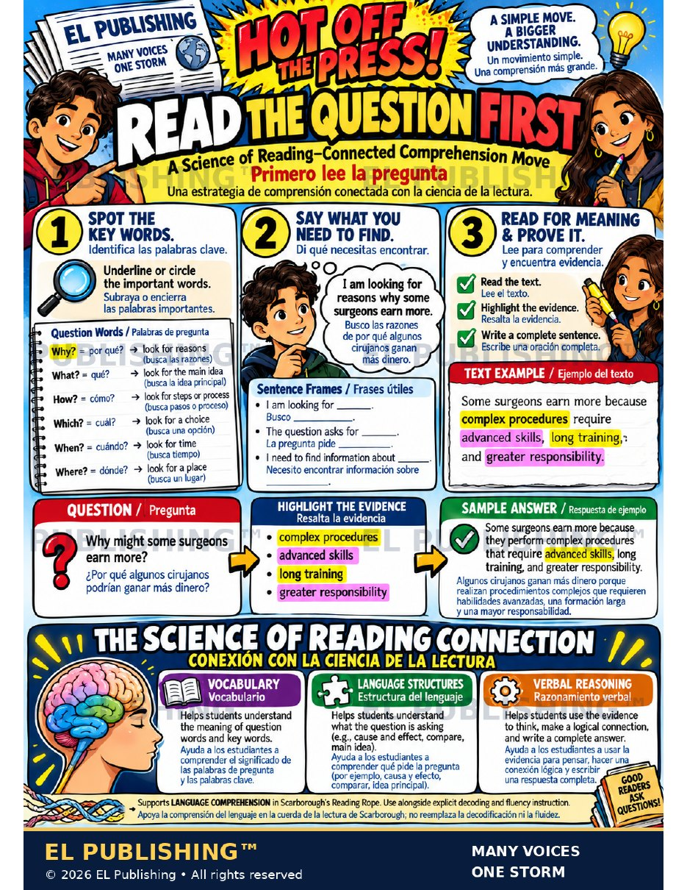

Start here
Why the question comes first
Most students read the passage, then read the question, then read the passage again. English learners pay that cost twice — once in time, once in language.
When a student reads the question before the text, the question becomes a search plan. The reader knows which words to hunt for, what kind of answer is expected (a reason, a step, a place, a choice), and when to stop and mark evidence. For an English learner that is the difference between reading everything at the same weight and reading with a purpose. It is the same habit good readers use on every ELPA21 and MAAP passage — made visible, taught in three steps, and said out loud.
Good readers ask questions. Los buenos lectores hacen preguntas. A question is not the thing you answer at the end; it is the lens you read through. Read it first, say what it wants, then go find it and prove it.
The move
Three steps
Teach them as a routine. After a week, students run it without you.
Underline or circle the important words in the question — the question word first (why, what, how), then the content words.
Subraya o encierra las palabras importantes.
Turn the question into a sentence about your job as a reader: “I am looking for reasons why some surgeons earn more.” Say it to a partner before you open the text.
Busco las razones de por qué algunos cirujanos ganan más dinero.
Read the text. Highlight the evidence that answers the question. Write a complete sentence that uses it.
Lee el texto. Resalta la evidencia. Escribe una oración completa.
- I am looking for ______. Busco ______.
- The question asks for ______. La pregunta pide ______.
- I need to find information about ______. Necesito encontrar información sobre ______.
Step 1 key
What each question word is asking for
The question word tells you the shape of the answer before you read a word of the passage.
| Question word | En español | Look for… | Busca… |
|---|---|---|---|
| Why? | ¿por qué? | reasons | las razones |
| What? | ¿qué? | the main idea | la idea principal |
| How? | ¿cómo? | steps or a process | pasos o un proceso |
| Which? | ¿cuál? | a choice | una opción |
| When? | ¿cuándo? | a time | un tiempo |
| Where? | ¿dónde? | a place | un lugar |
Post this key beside the poster. Newcomers can match the English and Spanish columns before they can read the passage at all — and that match is the beginning of comprehension, not a detour from it.
The poster's worked example
From question to answer
One question, one short text, all three steps.
Some surgeons earn more because complex procedures require advanced skills, long training, and greater responsibility.
Question · Pregunta
Why might some surgeons earn more?
¿Por qué algunos cirujanos podrían ganar más dinero?
Key word: why → look for reasons.
Evidence · Evidencia
complex procedures
advanced skills
long training
greater responsibility
Answer · Respuesta
Some surgeons earn more because they perform complex procedures that require advanced skills, long training, and greater responsibility.
Algunos cirujanos ganan más dinero porque realizan procedimientos complejos que requieren habilidades avanzadas, una formación larga y una mayor responsabilidad.
Notice what the answer does: it restates the question's key words (surgeons earn more), uses because to signal a reason, and carries the highlighted evidence into one complete sentence. That is the target product every time, in every lane.
Why it works
The Science of Reading connection
Conexión con la ciencia de la lectura. The move lives on the language-comprehension strand of Scarborough's Reading Rope.
This supports language comprehension. It does not replace explicit decoding and fluency instruction — the other strand of the Rope. A newcomer who cannot yet decode the passage still needs phonics; this move gives that student a reason to decode and a place to put what the words mean.
Differentiation
The move in four lanes
Same three steps, same text. The support changes, the goal does not.
Newcomer & Emerging
- Teacher reads the question aloud; student circles the question word and matches it on the key
- Step 2 is said in Spanish first, then with the frame in English
- Evidence is highlighted with a partner; the answer is a completed frame: Some surgeons earn more because ______.
- A one-sentence text, or one paragraph with the evidence in bold
Progressing & Challenge
- Student reads the question alone and writes the Step 2 sentence before opening the text
- Highlights evidence, then marks which highlight is strongest and why
- Writes an original complete answer that restates the question and uses because, so, or which means
- Challenge: two questions on one text, with different question words — and a note on how the reading changed
In the building
Ways to use it
Post the poster. Run the three steps on every warm-up passage for a week, with the Step 2 frame said aloud to a partner. By week two, hand students the question only and have them write the Step 2 sentence before they get the text.
Before any reading with questions — a lab, a history document, a word problem — project the question first and have the class do Steps 1 and 2 together in ninety seconds. It costs nothing and it changes how every student reads the next page.
Test questions are written in the same question words. Students who have practiced the move read the item, name what it wants, and go hunting — instead of reading the passage twice.
The poster is the session plan. Read the question, circle the word, say the plan, find the evidence, write the sentence. The Para Guide has the rest.
The page itself
The poster
Everything above, on one printable page. Print it on 11×17 for the wall, or letter-size for a student folder.

The poster. One page as a PDF — print it, project it, or send it home.
Poster illustrations are AI-generated; the students shown are fictional. Free for classroom use — print, copy and adapt.